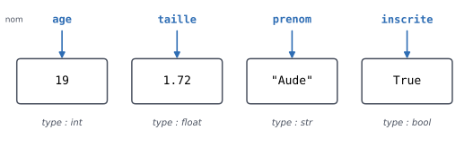
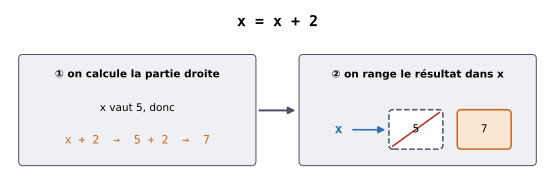
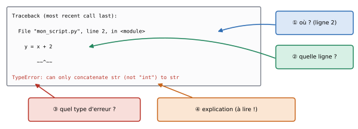

1. Variables, types et opérations#
Objectifs du chapitre
À la fin de ce chapitre, vous saurez :
afficher du texte et des résultats de calcul avec
print;créer des variables, leur donner des valeurs et connaître leur type ;
utiliser les opérateurs arithmétiques (
+,-,*,/,//,%,**) ;convertir une valeur d’un type à un autre (
int,float,str) ;lire un message d’erreur Python.
Durée indicative : 1h30.
1.1. Un tout premier programme#
Commençons par le plus simple des programmes : afficher un message à l’écran.
On utilise pour cela la fonction print :
print("Bonjour !")
Bonjour !
Le texte à afficher est placé entre guillemets (on parle de chaîne de caractères) et entre parenthèses après le mot print.
On peut aussi demander à Python d’afficher le résultat d’un calcul :
print(12 * 5)
60
ou encore afficher plusieurs choses à la suite, séparées par des virgules (Python insère alors un espace entre elles) :
print("12 fois 5 font", 12 * 5)
12 fois 5 font 60
Un programme est une suite d’instructions exécutées les unes après les autres, de haut en bas :
print("Première ligne")
print("Deuxième ligne")
print("Troisième ligne")
Première ligne
Deuxième ligne
Troisième ligne
Enfin, tout ce qui suit un symbole # sur une ligne est un commentaire : Python l’ignore complètement.
Les commentaires servent à expliquer le code aux humains qui le lisent (y compris vous-même dans trois semaines !).
# Ceci est un commentaire : il n'est pas exécuté
print("Le commentaire n'a rien affiché") # on peut aussi commenter en fin de ligne
Le commentaire n'a rien affiché
Testez-vous
Qu’affiche le programme suivant ?
print("3 + 4")
print(3 + 4)
Réponse
Il affiche :
3 + 4
7
Dans la première ligne, "3 + 4" est entre guillemets : c’est un texte, que Python affiche tel quel.
Dans la seconde, 3 + 4 est un calcul que Python effectue avant d’afficher le résultat.
1.2. Les variables#
1.2.1. Qu’est-ce qu’une variable ?#
Dès qu’un programme fait plus que quelques calculs, on a besoin de mémoriser des valeurs pour les réutiliser plus tard. En Python, les données sont stockées dans des variables. Une variable est une association entre un nom (choisi par vous) et une valeur, qui peut changer au cours de l’exécution du programme.
On peut se représenter une variable comme une étiquette portant un nom, accrochée à une boîte qui contient une valeur :


Fig. 1.1 Quatre variables et leurs valeurs. Chaque valeur a un type.#
Pour créer une variable, on utilise le signe =, appelé opérateur d’affectation :
age = 19
taille = 1.72
prenom = "Aude"
inscrite = True
Ces instructions n’affichent rien : elles se contentent de ranger des valeurs en mémoire. On peut ensuite utiliser les variables en écrivant simplement leur nom :
print(prenom)
print(age + 1)
print(prenom, "mesure", taille, "m")
Aude
20
Aude mesure 1.72 m
À retenir
Le signe = en Python ne signifie pas « est égal à » comme en mathématiques, mais « prend la valeur ».
L’instruction age = 19 se lit : « la variable age prend la valeur 19 ».
On met toujours le nom de la variable à gauche et la valeur à droite.
1.2.2. Les types de base#
Chaque valeur a un type, qui détermine ce que l’on peut faire avec elle. Les types de base en Python sont les suivants :
Type |
Signification |
Exemples |
|---|---|---|
|
nombre entier (integer) |
|
|
nombre à virgule (floating point number) |
|
|
chaîne de caractères (string), c’est-à-dire du texte |
|
|
booléen : vrai ou faux |
|
|
nombre complexe (peu utilisé dans ce document) |
|
Il existe de plus une valeur spéciale, None, qui signifie « pas de valeur » ou « valeur manquante » (son type est NoneType).
Erreur fréquente
En Python, la virgule des nombres décimaux s’écrit avec un point : on écrit
1.72et non1,72.Les chaînes de caractères peuvent être délimitées par des guillemets doubles (
"abc") ou simples ('abc') : les deux sont équivalents, mais il faut utiliser le même au début et à la fin.TrueetFalseprennent une majuscule.
Pour connaître le type d’une valeur ou d’une variable, on utilise la fonction type :
print(type(age))
print(type(taille))
print(type(prenom))
print(type(inscrite))
<class 'int'>
<class 'float'>
<class 'str'>
<class 'bool'>
En Python, on ne déclare pas le type d’une variable : il est déduit de la valeur qu’on y range. Et si l’on range une valeur d’un autre type dans la même variable, son type change (on dit que Python est typé dynamiquement) :
v = 12 # v est de type entier
print(type(v))
v = 12. # v change de type : c'est désormais un nombre à virgule
print(type(v))
<class 'int'>
<class 'float'>
Testez-vous
Quel est le type de chacune des valeurs suivantes ? 42, "42", 42.0, "vrai", False.
Réponse
42:int;"42":str(il y a des guillemets, c’est donc du texte, même s’il ne contient que des chiffres !) ;42.0:float;"vrai":str;False:bool.
Vous pouvez vérifier chacune de ces réponses avec la fonction type.
1.2.3. Choisir un nom de variable#
Les noms de variables doivent respecter quelques règles :
ils doivent commencer par une lettre (minuscule ou majuscule) ou par le symbole
_;ils ne doivent contenir que des lettres, des chiffres et des symboles
_(pas d’espace, pas de tiret-, pas d’apostrophe) ;ils ne doivent pas être un mot réservé du langage Python, dont voici la liste :
and del for is raise assert elif from lambda return break else global
not try nonlocal True False class except if or while continue import
pass yield None def finally in as with
enfin, il est vivement conseillé de ne pas utiliser le nom d’une fonction existante de Python (comme
print,type,list,sum…) : vous apprendrez ces noms au fur et à mesure.
Les noms de variables sont sensibles à la casse : mavariable et maVariable sont deux variables différentes.
mavariable = 12
maVariable = 15
print(mavariable)
print(maVariable)
12
15
Bonne pratique
Choisissez des noms explicites : prix_total est bien plus clair que pt ou x.
Un programme est écrit une fois mais relu de nombreuses fois !
En Python, l’usage est d’écrire les noms de variables en minuscules, avec des _ pour séparer les mots (nombre_etudiants).
Les accents sont autorisés mais il est d’usage de les éviter.
Testez-vous
Parmi les noms suivants, lesquels sont des noms de variables valides ?
note1, 1ere_note, note-finale, note_finale, _temp, for, Note.
Réponse
note1: valide ;1ere_note: invalide (commence par un chiffre) ;note-finale: invalide (le-est interprété comme une soustraction) ;note_finale: valide ;_temp: valide ;for: invalide (mot réservé) ;Note: valide (mais c’est une autre variable quenote).
1.3. L’affectation en détail#
La règle de l’affectation est la suivante : « calculer la valeur de ce qui est à droite du =, puis ranger le résultat dans la variable de gauche ».
Il est donc tout à fait valide d’écrire :
x = 5
x = x + 2
print(x)
7
Mathématiquement, x = x + 2 n’a aucun sens.
Mais en Python, cette instruction se lit : « x prend la valeur (ancienne valeur de x) + 2 ».


Fig. 1.2 Les deux temps de l’affectation x = x + 2 : d’abord le calcul à droite, ensuite le rangement à gauche (l’ancienne valeur est perdue).#
Le même principe s’applique pour des expressions plus complexes :
x = 2
x = 3.9 * x * (1 - x)
print(x)
-7.8
Pour exécuter la deuxième instruction, Python commence par évaluer 3.9 * x * (1 - x) avec la valeur courante de x (2), obtient -7.8, puis range ce résultat dans x.
Comme les instructions sont exécutées dans l’ordre, la valeur d’une variable à un instant donné dépend de tout ce qui a été exécuté avant :
a = 3
b = a + 1
a = 10
print(a, b)
10 4
Remarquez que modifier a à la ligne 3 ne modifie pas b : au moment de la ligne 2, Python a calculé a + 1 (qui valait 4) et a rangé le résultat dans b.
Voir ce code s’exécuter pas à pas dans Python Tutor
Testez-vous
Que contiennent les variables a et b à la fin de ce programme ?
a = 5
b = 2
a = b
b = a
Réponse
a et b valent toutes les deux 2.
À la ligne 3, a prend la valeur de b, soit 2 (et la valeur 5 est perdue).
À la ligne 4, b prend la valeur de a, qui vaut maintenant 2.
Ce programme n’échange donc pas les valeurs de a et b (c’est l’objet de l’exercice 1.5).
1.4. Les opérations sur les nombres#
1.4.1. Les opérateurs arithmétiques#
Voici les opérateurs disponibles pour les nombres (int et float) :
Opérateur |
Opération |
Exemple |
Résultat |
|---|---|---|---|
|
Addition |
|
|
|
Soustraction |
|
|
|
Multiplication |
|
|
|
Division |
|
|
|
Puissance |
|
|
|
Division entière (quotient) |
|
|
|
Modulo (reste de la division entière) |
|
|
Les deux derniers opérateurs méritent qu’on s’y arrête : ce sont ceux de la division que vous avez apprise à l’école primaire. Si l’on partage 17 bonbons entre 5 enfants, chaque enfant en reçoit 3 et il en reste 2 :
print(17 // 5) # quotient : nombre de bonbons par enfant
print(17 % 5) # reste : nombre de bonbons restants
3
2
À retenir
L’opérateur % (modulo) est très utile en pratique :
n % 2vaut0sinest pair et1sinest impair ;plus généralement,
n % k == 0signifie «nest divisible park» ;n % 10donne le dernier chiffre d’un entier positifn.
Notez que la division / donne toujours un float, même si le résultat « tombe juste » :
print(6 / 3)
print(2 / 3)
2.0
0.6666666666666666
De manière générale, lorsqu’une opération mêle un int et un float, le résultat est un float.
Les nombres à virgule sont approximatifs
Les ordinateurs stockent les nombres à virgule avec une précision limitée, ce qui donne parfois des résultats surprenants.
Par exemple, print(0.1 + 0.2) affiche 0.30000000000000004.
Ce n’est pas un bug de Python : la plupart des langages de programmation se comportent de la même façon.
Retenez simplement qu’il faut éviter de tester l’égalité exacte entre deux nombres à virgule, et utiliser l’affichage avec un nombre fixé de décimales (voir plus bas) pour présenter les résultats.
1.4.2. Priorité des opérateurs#
Lorsqu’une expression contient plusieurs opérateurs, Python applique les mêmes règles de priorité qu’en mathématiques (de la priorité la plus forte à la plus faible) :
parenthèses ;
puissance
**;multiplication, divisions et modulo (
*,/,//,%) ;addition et soustraction ;
à priorité égale, de gauche à droite.
print(2 + 3 * 4)
print((2 + 3) * 4)
print(2 * 3 ** 2)
14
20
18
En cas de doute, ajoutez des parenthèses : cela ne coûte rien et rend le code plus lisible.
1.4.3. Les opérateurs raccourcis#
Il est très fréquent de modifier une variable à partir de sa propre valeur (par exemple pour compter quelque chose).
Pour cela, il existe des raccourcis d’écriture : x += 2 est équivalent à x = x + 2.
compteur = 0
compteur += 1 # équivaut à compteur = compteur + 1
compteur += 1
print(compteur)
2
Il en va de même pour -=, *=, /=, etc.
Ce n’est qu’un raccourci : si vous ne vous sentez pas à l’aise avec, vous pouvez toujours écrire x = x + 2.
Testez-vous
Que valent les expressions suivantes ? 10 // 3, 10 % 3, 10 / 4, 2 ** 3 + 1, 15 % 5.
Réponse
10 // 3vaut3(10 = 3 × 3 + 1) ;10 % 3vaut1;10 / 4vaut2.5;2 ** 3 + 1vaut9(la puissance est prioritaire) ;15 % 5vaut0(15 est divisible par 5).
1.5. Opérations sur les chaînes et conversions#
1.5.1. Concaténation#
Certains opérateurs fonctionnent aussi avec les chaînes de caractères, avec un sens différent :
+ met deux chaînes bout à bout (on dit qu’on les concatène) et * répète une chaîne.
prenom = "Aude"
print("Bonjour " + prenom + " !")
print("ha" * 3)
Bonjour Aude !
hahaha
1.5.2. Conversions de type#
On ne peut pas additionner directement un texte et un nombre.
Il faut d’abord convertir l’un des deux dans le type de l’autre, à l’aide des fonctions int, float et str :
texte = "12"
nombre = int(texte) # conversion de str vers int
print(nombre + 2)
age = 19
print("J'ai " + str(age) + " ans") # conversion de int vers str
print(float("3.5") * 2) # conversion de str vers float
print(int(3.99)) # int() tronque : on garde la partie entière
14
J'ai 19 ans
7.0
3
Testez-vous
Qu’affichent les instructions suivantes ?
print("5" + "5")
print(5 + 5)
print("5" * 3)
print(int("5") * 3)
Réponse
55
10
555
15
Sur des chaînes, + concatène et * répète ; sur des nombres, ce sont l’addition et la multiplication habituelles.
1.5.3. Afficher joliment : les f-strings#
Construire un message avec des + et des str() devient vite pénible.
Python propose une écriture bien plus pratique, les f-strings : on place un f juste avant les guillemets et on écrit les noms de variables (ou des calculs) entre accolades {} dans le texte.
prenom = "Aude"
age = 19
print(f"{prenom} a {age} ans et aura {age + 1} ans l'an prochain.")
Aude a 19 ans et aura 20 ans l'an prochain.
On peut aussi contrôler le nombre de décimales affichées avec :.2f (2 chiffres après la virgule) :
prix = 10 / 3
print(f"Prix : {prix} euros")
print(f"Prix : {prix:.2f} euros")
Prix : 3.3333333333333335 euros
Prix : 3.33 euros
Vous rencontrerez aussi parfois une autre écriture, plus ancienne, qui utilise la méthode format : "{} a {} ans".format(prenom, age).
Nous reviendrons sur ces deux façons de faire au chapitre sur les chaînes de caractères.
1.6. Lire un message d’erreur#
En programmant, vous ferez des erreurs : c’est normal et cela arrive à tout le monde, débutant·e ou expert·e. Python vous aide en affichant un message d’erreur qu’il faut apprendre à lire. Voici ce qui se passe si l’on essaie d’additionner un texte et un nombre :
x = "12"
y = x + 2
---------------------------------------------------------------------------
TypeError Traceback (most recent call last)
Cell In[22], line 2
1 x = "12"
----> 2 y = x + 2
TypeError: can only concatenate str (not "int") to str
Ce message peut sembler effrayant, mais il contient des informations précieuses :


Fig. 1.3 Anatomie d’un message d’erreur (traceback) dans un script. La ligne la plus importante est la dernière.#
Où ? Le message indique la ligne du programme où l’erreur s’est produite (ici la ligne 2,
y = x + 2).Quel type d’erreur ? Ici une
TypeError, c’est-à-dire un problème de type de données.Quelle explication ? « can only concatenate str (not « int ») to str » : on ne peut concaténer (coller) une chaîne qu’avec une autre chaîne, pas avec un entier.
En effet, x contient le texte "12" (et non le nombre 12).
Pour corriger, il suffit de convertir x en entier :
x = "12"
y = int(x) + 2
print(y)
14
Erreurs fréquentes de ce chapitre
Message d’erreur |
Cause probable |
Correction |
|---|---|---|
|
faute de frappe dans un nom de variable, ou variable utilisée avant d’avoir été créée |
vérifier l’orthographe (et les majuscules) |
|
erreur de « grammaire » : parenthèse ou guillemet oublié, nom de variable invalide… |
regarder la ligne indiquée et la ligne précédente |
|
guillemet fermant oublié |
ajouter le guillemet |
|
|
convertir avec |
|
conversion impossible |
vérifier le contenu de la chaîne |
|
division par zéro |
vérifier la valeur du diviseur |
Voici par exemple une NameError, due à une faute de frappe :
prenom = "Aude"
print(prnom)
---------------------------------------------------------------------------
NameError Traceback (most recent call last)
Cell In[24], line 2
1 prenom = "Aude"
----> 2 print(prnom)
NameError: name 'prnom' is not defined
Si vous venez de R ou de SAS
L’affectation s’écrit uniquement avec
=(pas de<-).En R,
x <- 5crée un vecteur de longueur 1 ; en Python,5est un simple nombre, et une suite de valeurs est une liste (chapitre 5) ou un tableaunumpy(chapitre 10). Les opérations « vectorisées » auxquelles vous êtes habitué·e n’existent qu’avecnumpyetpandas.La division
/donne toujours un nombre à virgule ; la division entière s’écrit//(%/%en R) et le reste%(%%en R).Les valeurs logiques s’écrivent
TrueetFalse(et nonTRUE/FALSE), et la valeur manquante « générique » estNone(avecpandas, ce seraNaN, l’équivalent deNAen R et de.en SAS).Dans un script, seul
printaffiche quelque chose : contrairement à la console R, une expression seule sur une ligne n’est pas affichée (sauf dans la console Python ou en dernière ligne d’une cellule de notebook).
1.7. Exercices#
Exercice 1.1 : Conversion de températures ★
La température en degrés Fahrenheit \(F\) s’obtient à partir de la température en degrés Celsius \(C\) par la formule \(F = \frac{9}{5} C + 32\).
Écrivez un programme qui, à partir d’une température en degrés Celsius stockée dans une variable celsius, calcule la température en degrés Fahrenheit, la stocke dans une variable fahrenheit et l’affiche sous la forme 20 °C = 68.0 °F.
Indice
La traduction de la formule en Python est 9 / 5 * celsius + 32.
Pour l’affichage, utilisez une f-string : f"{celsius} °C = ...".
Solution
celsius = 20
fahrenheit = 9 / 5 * celsius + 32
print(f"{celsius} °C = {fahrenheit} °F")
Testez avec d’autres valeurs : -40 °C doit donner -40 °F, et 100 °C doit donner 212 °F.
Exercice 1.2 : Prix TTC ★
Un article coûte prix_ht euros hors taxes. La TVA est de 20 %.
Écrivez un programme qui calcule et affiche le montant de la TVA et le prix toutes taxes comprises (TTC), avec deux chiffres après la virgule.
Pour prix_ht = 49.99, on doit obtenir :
TVA : 10.00 euros
Prix TTC : 59.99 euros
Indice
La TVA vaut prix_ht * taux_tva et le prix TTC est la somme du prix hors taxes et de la TVA.
Pour afficher deux décimales, utilisez {variable:.2f} dans une f-string.
Solution
prix_ht = 49.99
taux_tva = 0.20
tva = prix_ht * taux_tva
prix_ttc = prix_ht + tva
print(f"TVA : {tva:.2f} euros")
print(f"Prix TTC : {prix_ttc:.2f} euros")
Stocker le taux dans une variable (taux_tva) plutôt que d’écrire 0.20 directement dans le calcul rend le programme plus lisible et plus facile à modifier si le taux change.
Exercice 1.3 : Heures, minutes, secondes ★★
Une durée est donnée en secondes dans une variable duree (par exemple duree = 4000).
Écrivez un programme qui affiche cette durée en heures, minutes et secondes.
Pour 4000 secondes, on doit obtenir : 4000 s = 1 h 6 min 40 s.
Indice
Une heure dure 3600 secondes.
Le nombre d’heures est donc le quotient duree // 3600, et le reste duree % 3600 est le nombre de secondes qui ne forment pas une heure complète.
Recommencez ensuite avec ce reste et 60 secondes par minute.
Solution
duree = 4000
heures = duree // 3600
reste = duree % 3600 # secondes restantes une fois les heures retirées
minutes = reste // 60
secondes = reste % 60
print(f"{duree} s = {heures} h {minutes} min {secondes} s")
Vérification : 1 × 3600 + 6 × 60 + 40 = 3600 + 360 + 40 = 4000. ✅
Exercice 1.4 : Chiffres d’un nombre ★★
Soit n un nombre entier positif à trois chiffres (par exemple n = 472).
Écrivez un programme qui affiche séparément son chiffre des unités, son chiffre des dizaines et son chiffre des centaines, puis la somme de ses chiffres.
Indice
n % 10 donne le chiffre des unités.
Que donne n // 10 ? Et (n // 10) % 10 ?
Solution
n = 472
unites = n % 10 # 2
dizaines = (n // 10) % 10 # 47 % 10 -> 7
centaines = n // 100 # 4
print("unités :", unites)
print("dizaines :", dizaines)
print("centaines :", centaines)
print("somme des chiffres :", unites + dizaines + centaines)
Exercice 1.5 : Échanger deux variables ★★
On dispose de deux variables a = 5 et b = 8.
Écrivez un programme qui échange leurs valeurs (à la fin, a doit valoir 8 et b doit valoir 5), sans écrire les nombres 5 et 8 ailleurs que dans les deux premières lignes.
Relisez la question « Testez-vous » de la section sur l’affectation : le piège y est décrit !
Indice
Pensez à la façon dont vous échangeriez le contenu de deux verres (un verre de jus d’orange et un verre de lait) : il vous faut un troisième verre !
Solution
On utilise une troisième variable pour mettre de côté la valeur de a avant de l’écraser :
a = 5
b = 8
temp = a # on sauvegarde la valeur de a
a = b # a prend la valeur de b (l'ancienne valeur de a est perdue, mais on l'a sauvegardée)
b = temp # b prend l'ancienne valeur de a
print(a, b)
Python propose aussi une écriture plus compacte, que nous expliquerons au chapitre 7 :
a = 5
b = 8
a, b = b, a
print(a, b)
Exercice 1.6 : Ticket de caisse ★★★
Vous achetez nb_croissants croissants à 1,10 € pièce et nb_baguettes baguettes à 0,95 € pièce.
Vous payez avec un billet de 20 €.
Écrivez un programme qui affiche le montant total et la monnaie rendue, puis le nombre de pièces de 2 € qui seront rendues au maximum dans cette monnaie.
Pour 3 croissants et 2 baguettes, on doit obtenir :
Total : 5.20 euros
Monnaie : 14.80 euros
Dont 7 pièce(s) de 2 euros
Indice
Le nombre de pièces de 2 € est le quotient de la division entière de la monnaie par 2.
Le résultat est un float (par exemple 7.0) : convertissez-le en entier avec int().
Solution
nb_croissants = 3
nb_baguettes = 2
prix_croissant = 1.10
prix_baguette = 0.95
total = nb_croissants * prix_croissant + nb_baguettes * prix_baguette
monnaie = 20 - total
pieces_2_euros = int(monnaie // 2)
print(f"Total : {total:.2f} euros")
print(f"Monnaie : {monnaie:.2f} euros")
print(f"Dont {pieces_2_euros} pièce(s) de 2 euros")
Remarque : le calcul int(monnaie // 2) fonctionne car monnaie // 2 vaut 7.0, que int convertit en 7.
1.8. Bilan du chapitre#
À retenir
print(...)affiche des valeurs ; le texte s’écrit entre guillemets.variable = valeur: on calcule ce qui est à droite puis on range le résultat dans la variable de gauche.Types de base :
int,float,str,bool(et la valeur spécialeNone). La fonctiontypedonne le type d’une valeur.//donne le quotient de la division entière,%le reste ;/donne toujours unfloat.On convertit avec
int(),float(),str().f"... {variable} ..."permet d’insérer des valeurs dans un texte.Un message d’erreur se lit en commençant par la dernière ligne, puis en allant voir la ligne de code indiquée.
Faites le point : êtes-vous capable de…
créer une variable, l’afficher et connaître son type ?
prédire la valeur d’une variable après une suite d’affectations ?
calculer un quotient et un reste avec
//et%?convertir un texte en nombre et inversement ?
afficher un message contenant des valeurs de variables avec une f-string ?
identifier, dans un message d’erreur, la ligne en cause et le type d’erreur ?
Si vous avez coché toutes les cases, passez au chapitre suivant. Sinon, relisez les sections correspondantes et refaites les exercices associés.